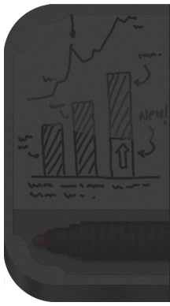

Support
Support

Thank you for downloaded Markerboard app for iPhone, we try to help you with all the basic questions here.
FAQ
Markerboard & Eraser
01. How to see my Marker pen?
Click on the option button on the bottom right of the markerboard (a circle icon)
will bring the marker pen. Make sure the toggle button on the left is in marker mode (a pen icon).
02. How to adjust the Marker size?
There are two ways you can do that, one is by going to the
brush panel and adjusting it through slider or just tap on the marker
body and slide your finger down. The options are available in the option panel.
03. Is there any way to change the color of my Marker?
Yes, there are two ways you can change the marker color, one is rolling
the pen and another is tapping the pen, those options are available in the options
panel. The available colors are black and red.
04. How can i access the brush panel?
Just tapping the head of the marker will bring the brush panel,
and tap the eraser (if you are in the eraser mode) will bring the eraser panel.
05. What are the brushes below the brush slider in the Brush panel?
The History brushes, the quickest way to access your previously used brushes.
Just by tapping will select the brush size.
06. How to see my Eraser?
You have to be on the eraser mode, to access the eraser.
Tapping the toggle button will switch from marker to eraser.
07. Can i adjust the eraser size, like marker?
Yes, you can. Slide your finger from top to bottom on
the eraser will decrease the eraser size and sliding
it from bottom to top will increase.
08. Is Brush Panel and Eraser Panel are linked?
No, they are not. You can have different brush size for eraser and marker.
Options
01. How to get to the Options panel?
Tap on the button on the bottom right of the markerboard will
bring the marker/eraser and below you will see a ‘Option’ button.
02. What is ‘Toggle Button Opacity’?
It controls the transparency
of both buttons on the main Markerboard.
03. What is roll pen and tap pen?
To change the color of your marker, you can use roll
pen or tap pen options. If the roll pen is selected (blue highlight),
just swipe the pen from right to left will change the marker color.
If, tap pen is selected (blue highlighted), just tap on the pen will
change the color instantaneously.
04. What is offset cursor?
Offset your starting point of your markerpen.
General
01. How to Save my work?
You cannot save anything in the markerboard.
If you quit the app your previous made sketches will be there until you come back next time.
02. How to Clear the contents?
You have to use the bigger size eraser to clean the board.
03. Is there an Undo’s?
No, currently that option is not available,
but we will be updating it soon.
04. Will there be more update?
Yes, there will be updates in the near future.
If you have any suggessions or comments feel free to drop us a mail, we love to hear from you.
